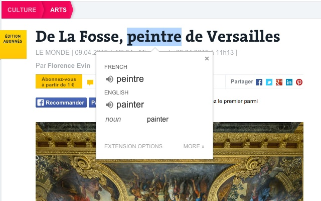
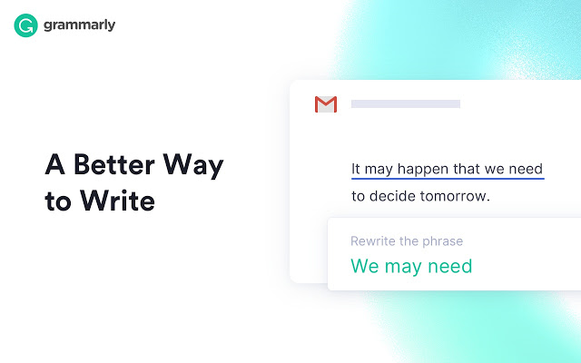
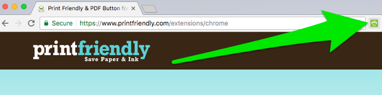
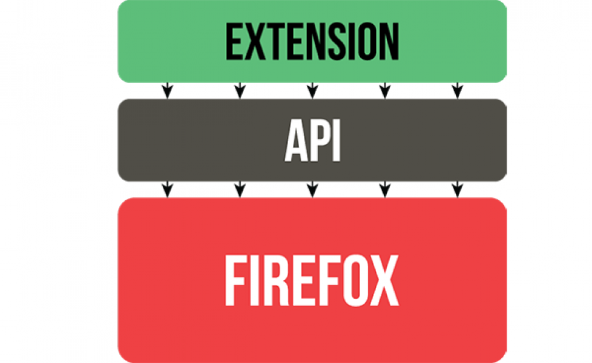
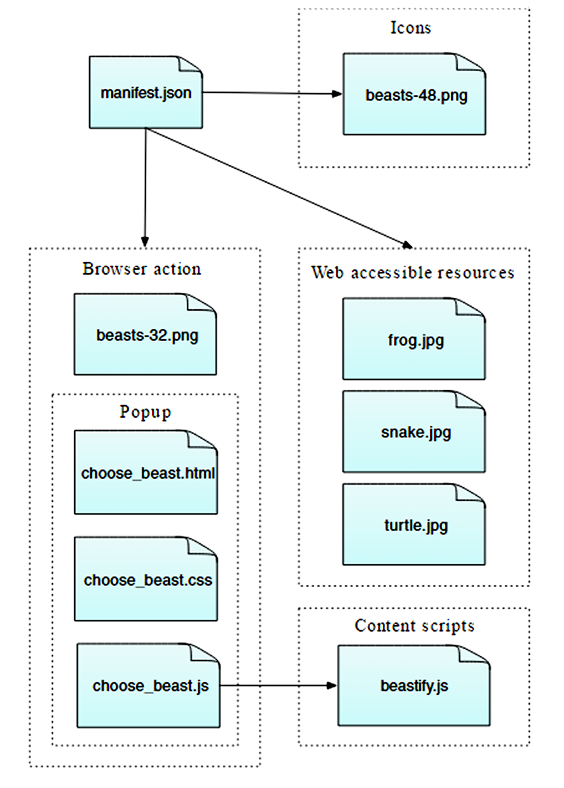

What are browser extensions
Reasons to use extensions
- The use of extensions helps you to integrate with other services you use
- The use of extensions helps you to add additional features to your internet browser.
- The use of extensions helps you to improve the functionality of the internet browser.
- The use of extensions helps you to modify- adding, removing, or modifying content.
- The use of extensions helps you to modify- adding, removing, or modifying content.
- The use of extensions helps you to automate your tasks.
- The use of extensions helps you to perform multiple tasks with fewer efforts and time.
Some browser extensions examples
- Google Translate

- Grammarly

- Print Frienfly

Creating extensions width Web Extensions

Anatomy of an extension

Background scripts
Sidebars, popups, options pages
Extension pages
Content scripts
Web accessible resources
Thank you